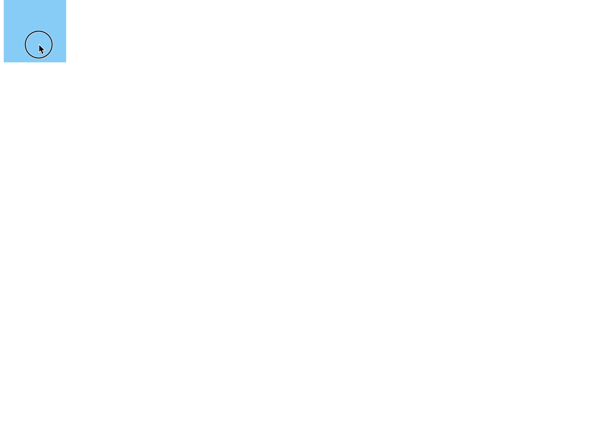

拖拽
拖拽
思路
1 | 1. 我们现在已知的有 鼠标按下的位置 A 鼠标在移动的时候的位置 B 盒子开始的位置 C1 |

鼠标按下
1 | 1. 当鼠标按下的时候 我们要记录我们按下的位置 还有 盒子的初始位置 |
1 | //鼠标按下的时候 执行down函数 |
鼠标移动
1 | 1. 鼠标移动的时候 我们要动态计算 我们盒子移动的距离 |
1 | const down = function (ev) { |
鼠标抬起
1 | 1. 鼠标抬起 我们要做的事情 就是要解绑 我们移动事件 和按下事件 |
1 | const down = function (ev) { |
处理边界
1 | 1. 我们需要找到最大边界值 |
1 | let box = document.getElementById('box') |
1 | const move = function(ev){ |
鼠标焦点丢失
1 | 1. 首先 我们的拖拽事件 是在指针在盒子上按下的时候 才会执行 |

解决方案
1 | 1. ie / 火狐下 我们可以使用一个方法 把盒子和 指针绑定在一起 |
1 | const down = function (ev) { |
1 | // 谷歌下 我们直接移动和 抬起 直接绑定给window 解绑的时候 也是一样 但是要注意this的指向问题 |
地址
1 | https://github.com/wazer1987/Drag |


公告
感谢访问本站，如喜欢请收藏。本站主要分享前端知识，立志成为资深前端工程师，但目前是一个前端界的小学生 若喜欢可以打赏请博主喝一杯冰阔落
另外请大家多多支持淼哥的开源项目
https://github.com/flipped-aurora/gin-vue-admin
🌟🌟欢迎大家start 🌟🌟
欢迎加入博主的前端技术交流群